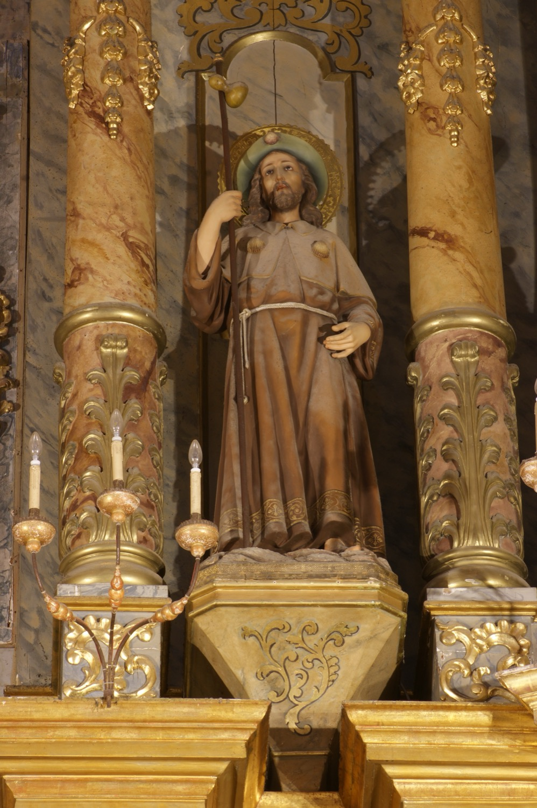

Sant Jaume el Major (s. I) va ser un dels dotze apòstols i germà de sant Joan l’Evangelista. Formà part del grup de deixebles més proper a Jesús, i després de la seva mort predicà per Samària, Judea i, segons la tradició, per la península Ibèrica. Va ser el primer apòstol a morir martiritzat, manat decapitar per Herodes Agripa II per tal d’acontentar els jueus. Segons la llegenda, les seves despulles varen ser traslladades a Galícia per sis deixebles i descansen a Santiago de Compostel·la.
En aquesta escultura se’l representa amb indumentària i bastó de pelegrí, inclosa la carabassa per portar aigua a mode de cantimplora, per recordar el seu paper com a viatger evangelitzador, i algunes vieires, símbol de les peregrinacions a Santiago.